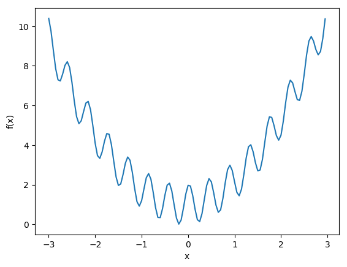
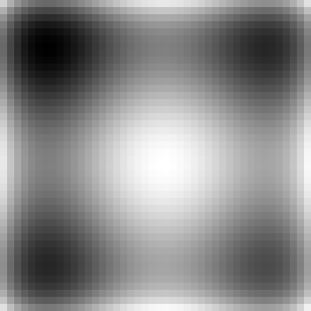

En la séptima práctica implementamos una optimización heurística sencilla para encontrar máximos locales de funciones, los ejemplos siendo de Womersley [11] — los matemáticamente inclinados pueden consultar su trabajo por métodos de búsqueda más sofisticados, guiados por métodos matemáticos de mayor rigor.
f <- function(x) {
return(cos(14.5*x - 0.3) + x * (x + 0.2) + 1.01)
}
x <- seq(-3, 3, 0.05)
png("p7_1d.png", width=500, height=400)
plot(x, f(x), type="l")
graphics.off()
import matplotlib.pyplot as plt
from math import cos
import numpy as np
def f(x):
return cos(14.5*x - 0.3) + x * (x + 0.2) + 1.01
vf = np.vectorize(f)
x = np.arange(-3, 3, 0.05)
plt.figure(figsize=(8, 3), dpi=300)
plt.plot(x, vf(x))
plt.xlabel('x')
plt.ylabel('f(x)')
plt.savefig('p7p_1d.png', bbox_inches='tight')
plt.close()

Buscamos minimizar la función unidimensional, a partir de un punto seleccionado al azar, realizando movimientos locales. Estando en $x$, seleccionará al azar un $\Delta x > 0$ pequeño, calculará los valores $f(x \pm \Delta x)$ y seleccionará el menor de los dos como el siguiente valor de $x$. Esto se repite $k$ veces y aquel $x$ que produjo el menor valor de $f(x)$ se regresa como el resultado. Se realizarán $n$ réplicas, y el menor de ellos es el resultado de la búsqueda en sí. La primera versión es sencilla, ineficiente y con una sola réplica para poder entender el comportamiento de la búsqueda y visualizarla.
Réplicas para ejecución paralela:
Con pocos pasos, todas las cien réplicas se acercan a la solución óptima:
Con mil pasos, ya están cerca para R y todos juntos con Python (ojo, cambia con cada corrida):

Con diez mil pasos, todos dan el mismo resultado en ambos casos:

La tarea se trata de maximizar algún variante de la función bidimensional ejemplo, $g(x, y)$ (ver abajo), con restricciones tipo $-3 \leq x, y \leq 3$, con la misma técnica del ejemplo unidimensional. La posición actual es un par $x, y$ y se ocupan dos movimientos aleatorios, $\Delta x$ y $\Delta y$, cuyas combinaciones posibles proveen ocho posiciones vecino, de los cuales aquella que logra el mayor valor para $g$ es seleccionado. Dibujado en tres dimensiones, $g(x, y)$ se ve así:

g <- function(x, y) {
return(((x + 0.5)^4 - 30 * x^2 - 20 * x + (y + 0.5)^4 - 30 * y^2 - 20 * y)/100)
}
x <- seq(-6, 5, 0.25)
y <- x
z <- outer(x, y, g)
png("p7_2d.png", width=700, height=700)
persp(x, y, z, shade=0.2, col='orange', theta=40, phi=30)
graphics.off()
import numpy as np
from matplotlib import cm
import matplotlib.pyplot as plt
from mpl_toolkits.mplot3d import Axes3D
from matplotlib.ticker import LinearLocator, FormatStrFormatter
low = -6
high = 5
step = 0.25
x = np.arange(low, high, step)
y = np.arange(low, high, step)
x, y = np.meshgrid(x, y)
z = ((x + 0.5)**4 - 30 * x**2 - 20 * x + (y + 0.5)**4 - 30 * y**2 - 20 * y)/100
fig = plt.figure()
ax = fig.gca(projection='3d')
s = ax.plot_surface(x, y, z, cmap=cm.coolwarm, linewidth=0, antialiased=False)
ax.zaxis.set_major_locator(LinearLocator(10))
ax.zaxis.set_major_formatter(FormatStrFormatter('%.01f'))
fig.colorbar(s, shrink=0.5, aspect=5)
plt.savefig("p7p_2d.png")
Es más fácil visualizar el proceso de la búsqueda en una proyección en el plano $xy$ donde el valor $z = g(x, y)$ se representa con un color. El mecanismo más sencillo produce lo siguiente:
g <- function(x, y) {
return(((x + 0.5)^4 - 30 * x^2 - 20 * x + (y + 0.5)^4 - 30 * y^2 - 20 * y)/100)
}
x <- seq(-6, 5, 0.25)
y <- x
z <- outer(x, y, g)
png("p7_flat_1.png", width=500, height=500)
image(z)
graphics.off()
from scipy.misc import toimage
import numpy as np
def g(x, y):
return ((x + 0.5)**4 - 30 * x**2 - 20 * x + (y + 0.5)**4 - 30 * y**2 - 20 * y)/100
p = np.arange(-6, 5, 0.25)
n = len(p)
z = np.zeros((n, n), dtype=float)
for i in range(n):
x =p[i]
for j in range(n):
y = p[j]
z[i, j] = g(x, y)
img = toimage(z)
visual = img.resize((10 * n, 10 * n))
visual.save('p7p_flat_1.png')

Los inconvenientes con estas gráficas son la falta de una
escala para los valores $z$ — además, en R los ejes son
siempre de cero a uno y en Python no hay ejes. En R, el
paquete lattice ofrece algo de mejora y en Python se
puede moverle al matplotlib, manteniendo presente que
el origen matemático está en la esquina izquierda inferior mientras
para imágenes origen está en la esquina izquierda superior, por lo
cual habrá que voltear el eje vertical (aunque no se nota en la
figura simétrica).
g <- function(x, y) {
return(((x + 0.5)^4 - 30 * x^2 - 20 * x + (y + 0.5)^4 - 30 * y^2 - 20 * y)/100)
}
png("p7_2d.png", width=700, height=700)
x <- seq(-6, 5, 0.25)
y <- x
z <- outer(x, y, g)
dimnames(z) <- list(x, y)
library(reshape2) # recuerda instalar paquetes antes de intentar su uso
d <- melt(z)
names(d) <- c("x", "y", "z")
library(lattice) # lo mismo aplica con este paquete
png("p7_flat_2.png", width=500, height=500)
levelplot(z ~ x * y, data = d)
graphics.off()
import matplotlib.colorbar as colorbar
import matplotlib.pyplot as plt
import numpy as np
def g(x, y):
return ((x + 0.5)**4 - 30 * x**2 - 20 * x + (y + 0.5)**4 - 30 * y**2 - 20 * y)/100
low = -6
high = 5
step = 0.25
p = np.arange(low, high, step)
n = len(p)
z = np.zeros((n, n), dtype=float)
for i in range(n):
x = p[i]
for j in range(n):
y = p[n - j - 1] # voltear
z[i, j] = g(x, y)
t = range(0, n, 5)
l = ['{:.1f}'.format(low + i * step) for i in t]
fig, ax = plt.subplots(figsize=(6, 5), ncols=1)
pos = ax.imshow(z)
plt.xticks(t, l)
plt.yticks(t, l[::-1]) # arriba-abajo
fig.colorbar(pos, ax=ax)
plt.savefig('p7p_flat_2.png')
Crea una visualización (animada) de cómo proceden por lo menos $5$ réplicas simultáneas de por lo menos $500$ pasos de la búsqueda encima de una gráfica de proyección plana.
El primer reto es cambiar la regla del movimiento de una solución $\mathbf{x}$ (un vector de dimensión arbitraria) a la siguiente a la de recocido simulado: para optimizar una función $f(\mathbf{x})$, se genera para la solución actual $\mathbf{x}$ un sólo vecino $\mathbf{x}' = \mathbf{x} + \Delta \mathbf{x}$ (algún desplazamiento local). Se calcula $\delta = f(\mathbf{x}') - f(\mathbf{x})$ (para minimizar; maximizando la resta se hace al revés). Si $\delta > 0$, siempre se acepta al vecino $\mathbf{x}'$ como la solución actual ya que representa una mejora. Si $\delta < 0$, se acepta a $\mathbf{x}'$ con probabilidad $\exp(\delta / T)$ y rechaza en otro caso. Aquí $T$ es una temperatura que decrece en aquellos pasos donde se acepta una empeora; la reducción se logra multiplicando el valor actual de $T$ con $\xi < 1$, como por ejemplo $0.995$. Examina los efectos estadísticos del valor inicial de $T$ y el valor de $\xi$ en la calidad de la solución, es decir, qué tan bajo (para minimizar; alto para maximizar) el mejor valor termina siendo.
> exp(-1.0)
[1] 0.3678794
> exp(-2.0)
[1] 0.1353353
> exp(-9.0)
[1] 0.0001234098
> exp(-10.0)
[1] 4.539993e-05
> exp(-0.000001)
[1] 0.999999
El segundo reto es comparar sí o no hay diferencia estadísticamente significativa entre el método de la tarea base y el método del primer reto en términos de la precisión del resultado obtenido (es decir, la diferencia entre el resultado reportado y el óptimo global) en función del número de iteraciones y el número de réplicas.
https://satuelisa.github.io/simulation/p7.html